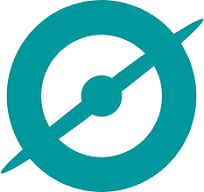

PhD Candidate · Max Planck Institute for Gravitational Physics
Alexandra Botnariuc
Radio Astronomer · Pulsar Searcher · Astroinformatician
Searching for new pulsars, with a focus on compact binaries, in major radio surveys' archival data — from Arecibo and Parkes to FAST and MeerKAT. Combining template search algorithms with volunteer computing, custom candidate clustering and selection, and multi-telescope observations to find rare systems that push the boundaries of neutron star physics.
.jpg
01 — About
Nice to meet you!
I am currently a PhD student at Leibniz Universität Hannover, working in the Pulsar Group led by Dr. Colin Clark and part of Prof. Bruce Allen's Observational Relativity and Cosmology group at the Max Planck Institute for Gravitational Physics in Hannover. My research has focused mainly on the discovery and follow-up of new radio pulsars — canonical and in tight binaries — in large archival datasets, specifically from the PALFA (Arecibo), PMPS (Parkes), and public FAST GPPS surveys. I have been involved in several group projects, and obtained telescope time with ALMA to search for debris disks as potential evidence for pulsar planets. I am currently actively observing with the Murriyang (Parkes) radio telescope.
My path to astrophysics was anything but straight. Though always drawn more to physics than to mathematics — even if, at first, mathematics was the easier one — I worked hard to acquire the elusive physics intuition that good scientists possess. I read Natural Sciences at Cambridge University, where I studied Mathematics and then Physics, before pursuing a career in professional software development. There, analytical thinking, fast learning, and a natural aptitude for leading people quickly brought me to a Team Lead role, managing projects and developer teams. My passion for physics never faded, and when I could finally make it work, I enrolled in an MSc at Rostock University combining computational science and physics. My thesis was carried out in the Star Formation and Protoplanetary Disks group of Prof. Sebastian Wolf in Kiel, using Monte Carlo simulations to fit luminosity and temperature profiles to observations of protoplanetary disks. That combination — physical modelling, large-scale computation, and observational data — is exactly what defines my current work, where I build pipelines, develop algorithms, run large-scale searches on CPU and GPU clusters, and let the physical nature of the objects shape every step of the search design.
My longer-term research goal is to help establish pulsar planets as a dedicated field of study. Key questions I want to answer: How and why did these systems form? Did the planets survive the supernova, or condense from post-explosion debris? Could any of them be habitable in some meaningful sense? What do they reveal about planetary formation channels more broadly — and which assumptions from standard formation theory break down in this extreme regime?
🎧 Hello PhD podcast — If you want to hear all about my journey to the PhD, have a listen to this interview.
02 — Research
Research Interests
hover or tap a card to read more
03 — CV
Curriculum Vitae
04 — Citizen Science
Citizen Science Projects

Pulsar Hunters05 — Conferences & Talks
Conferences & Teaching
07 — Pulsar Simulator
Pulsar Simulator
10 — Contact